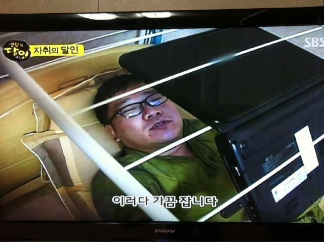

- 그래픽디자인
무언가를 더욱 보기 좋게 포장하는 일이라, 본질과 가장 멀어보인다는 인상을 주지만, 실은 포장하는 무엇의 본질을 날카롭게 파악해야만 매끄럽게 진행할 수 있기에 다양한 공부가 필요한 행위라고 생각합니다. 자나깨나 핀트를 맞추어야하며 (그것이 주제선정이든, 분판인쇄든간에), 이미지로서 관객에게 가닿지 못하면 실패합니다.그래픽 디자인이란 무엇인가? 그래픽 디자인을 다른 행위에 비유하자면 포장에 가깝습니다.
무언가를 더욱 보기 좋게 포장하는 일이라, 본질과 가장 멀어보인다는 인상을 주지만, 실은 포장하는 무엇의 본질을 날카롭게 파악해야만 매끄럽게 진행할 수 있기에 다양한 공부가 필요한 행위라고 생각합니다. 자나깨나 핀트를 맞추어야하며 (그것이 주제선정이든, 분판인쇄든간에), 이미지로서 관객에게 가닿지 못하면 실패합니다. 그래픽 디자인이란 무엇인가?  그래픽 디자인을 다른 행위에 비유하자면 포장에 가깝습니다.
무언가를 더욱 보기 좋게 포장하는 일이라, 본질과 가장 멀어보인다는 인상을 주지만, 실은 포장하는 무엇의 본질을 날카롭게 파악해야만 매끄럽게 진행할 수 있기에 다양한 공부가 필요한 행위라고 생각합니다. 자나깨나 핀트를 맞추어야하며 (그것이 주제선정이든, 분판인쇄든간에), 이미지로서 관객에게 가닿지 못하면 실패합니다. 그래픽 디자인이란 무엇인가? 그래픽 디자인을 다른 행위에 비유하자면 포장에 가깝습니다.
무언가를 더욱 보기 좋게 포장하는 일이라, 본질과 가장 멀어보인다는 인상을 주지만, 실은 포장하는 무엇의 본질을 날카롭게 파악해야만 매끄럽게 진행할 수 있기에 다양한 공부가 필요한 행위라고 생각합니다. 자나깨나 핀트를 맞추어야하며 (그것이 주제선정이든, 분판인쇄든간에), 이미지로서 관객에게 가닿지 못하면 실패합니다. 그래픽 디자인이란 무엇인가? 그래픽 디자인을 다른 행위에 비유하자면 포장에 가깝습니다.
무언가를 더욱 보기 좋게 포장하는 일이라, 본질과 가장 멀어보인다는 인상을 주지만, 실은 포장하는 무엇의 본질을 날카롭게 파악해야만 매끄럽게 진행할 수 있기에 다양한 공부가 필요한 행위라고 생각합니다. 자나깨나 핀트를 맞추어야하며 (그것이 주제선정이든, 분판인쇄든간에), 이미지로서 관객에게 가닿지 못하면 실패합니다. 그래픽 디자인이란 무엇인가? 그래픽 디자인을 다른 행위에 비유하자면 포장에 가깝습니다.
무언가를 더욱 보기 좋게 포장하는 일이라, 본질과 가장 멀어보인다는 인상을 주지만, 실은 포장하는 무엇의 본질을 날카롭게 파악해야만 매끄럽게 진행할 수 있기에 다양한 공부가 필요한 행위라고 생각합니다. 자나깨나 핀트를 맞추어야하며 (그것이 주제선정이든, 분판인쇄든간에), 이미지로서 관객에게 가닿지 못하면 실패합니다. 그래픽 디자인이란 무엇인가? 그래픽 디자인을 다른 행위에 비유하자면 포장에 가깝습니다.
무언가를 더욱 보기 좋게 포장하는 일이라, 본질과 가장 멀어보인다는 인상을 주지만, 실은 포장하는 무엇의 본질을 날카롭게 파악해야만 매끄럽게 진행할 수 있기에 다양한 공부가 필요한 행위라고 생각합니다. 자나깨나 핀트를 맞추어야하며 (그것이 주제선정이든, 분판인쇄든간에), 이미지로서 관객에게 가닿지 못하면 실패합니다.